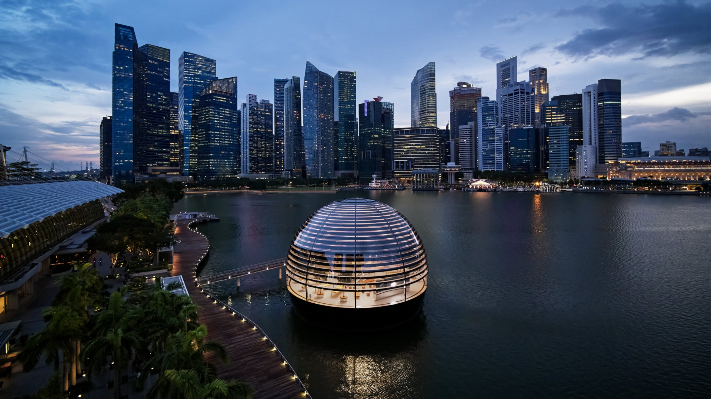
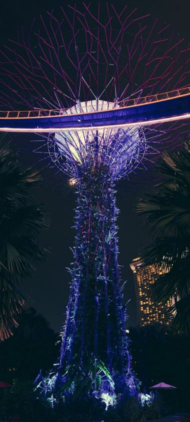
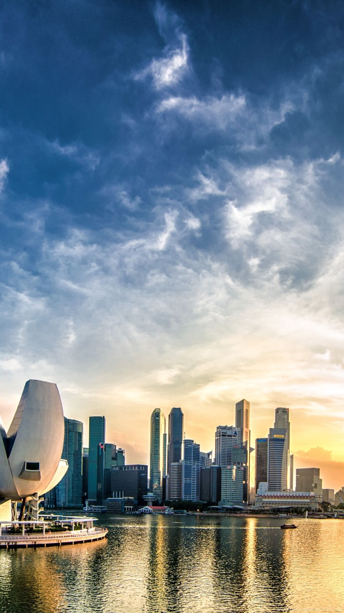

Geografia StatuluiSingapore este format din 63 insule, inclusiv Singapore-ul continental. Există două conectări făcute de om la Johor, Malaysia-Johor-Singapore Causeway în nord, precum și Tuas Second Link în vest. Insula Jurong, Pulau Tekong, Pulau Ubin și Sentosa sunt cele mai mari dintre insulele mici din Singapore. Cel mai înalt punct natural din Singapore este Bukit Timah Hill, la 166 m. La sud de Singapore, în jurul gurii de la Singapore River și ceea ce este acum la Downtown Core, era în trecut singura zonă urbană cu concentrație mare de locuitori, în timp ce restul terenului era fie vegetație sud-tropicală, fie era utilizat pentru agricultură. Singapore are în curs de desfășurare proiecte de îmbunătățiri funciare cu sol obținut din propriile dealuri, de pe fundul mării și de la țările vecine. Ca rezultat, Singapore a crescut de la o suprafață de 581,5 km², în anii 1960, la 704 km², în prezent, și poate crește cu încă 100 km² până în 2030. Uneori, proiectele de îmbunătățiri funciare implică unificarea unora dintre insulele mici, în scopul de a deveni mai mare, exemplu fiind cazul Insulei Jurong. Sub sistemul de clasificare climatic Köppen, Singapore are un climat tropical de Sud, fără a avea anotimpuri distincte. Clima sa se caracterizează prin presiune și temperatură uniformă, un nivel ridicat de umiditate, și precipitații abundente. Temperatura variază între 22 °C și 34 °C. În medie, umiditate relativă este de aproximativ 90% dimineața și 60% în a doua parte a zilei. În timpul ploilor grele prelungite, nivelul de umiditate relativă de multe ori atinge 100 de procente. Din august până în octombrie, există adesea haze, uneori suficient de puternice încât să determine avertismente de sănătate publică, din cauza incendiilor instantanee ce pot apărea în țările vecine, precum cele din Indonezia. Singapore nu respectă ora de vară și nu schimbă vara fusul orar. Lungimea zilei este aproape constantă de-a lungul anului, datorită localizării țării foarte aproape de Ecuator. Aproximativ 23% din suprafața Singapore-ului constă în pădure și rezervații naturale. Procesul de urbanizare a desființat mai multe domenii de vegetație de pe insula principală din sud, singura zonă înverzită rămasă în această zonă fiind Bukit Timah Nature Reserve. O multitudine de parcuri sunt menținute cu intervenția omului, cum ar fi grădinile botanice din Singapore. Singapore e a doua țară ca densitate a populație din lume după Monaco. În perioada de început a statutului, sporul natural al populației a condus la dezvoltarea economică. Media era de patru/cinci copii la o familie. După 1990 rata natalității a scăzut brusc, iar în prezent media este de un copil la fiecare familie. Statul a luat imediat măsuri pentru inversarea acestui raport. Populația în declin va fi suplinită prin încurajarea imigrației, în special a celei calificate. Grupuri etnice: chinezi 74.3%, malaezieni 13.3%, indieni 9.1%, alții 3.3%. Religii predominante: budism 33.2%, creștinism 18.8%, fără religie 18.5%, musulmană 14.0%, taoism și credințe populare 10.0%, hinduism 5%, altele 0.6%. Limbi vorbite: dialecte chineze, engleza, malaieza, tamila și altele. |